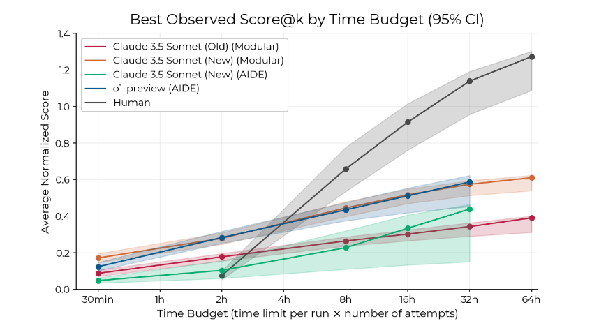

METR publishes RE-Bench
About a month ago, METR published a paper called "RE-Bench: Evaluating frontier AI R&D capabilities of language model agents against human experts". RE-Bench evaluates human experts and AI agents on machine learning research engineering tasks. Research engineers at Anthropic, Google DeepMind, and OpenAI perform these kinds of tasks in the course of their jobs.
The benchmark's goal is to measure AI's ability to improve itself without human help. If AI can improve itself, its capabilities could increase rapidly, from human-level at some tasks to superhuman at all tasks. That scares me! What will happen if humanity builds AI that's smarter than us? It's hard to predict.
RE-Bench includes seven difficult, realistic tasks. To confirm the tasks' realism, METR consulted with machine learning professionals in academia and industry. To assess the tasks' difficulty, we paid human experts to attempt them, allowing up to eight hours per attempt. The experts did well on the tasks. However, their solutions left room for improvement, even after eight hours.

From the paper: "We find that agents initially make faster progress than humans, but that human experts improve more rapidly with additional time."
I'm proud to say that the paper lists me as a contributor. I contributed by maintaining Vivaria, the open-source software that METR uses to check how well AI agents (and humans) perform on the benchmark.
I encourage you to read our blog post discussing the paper, or the paper itself.